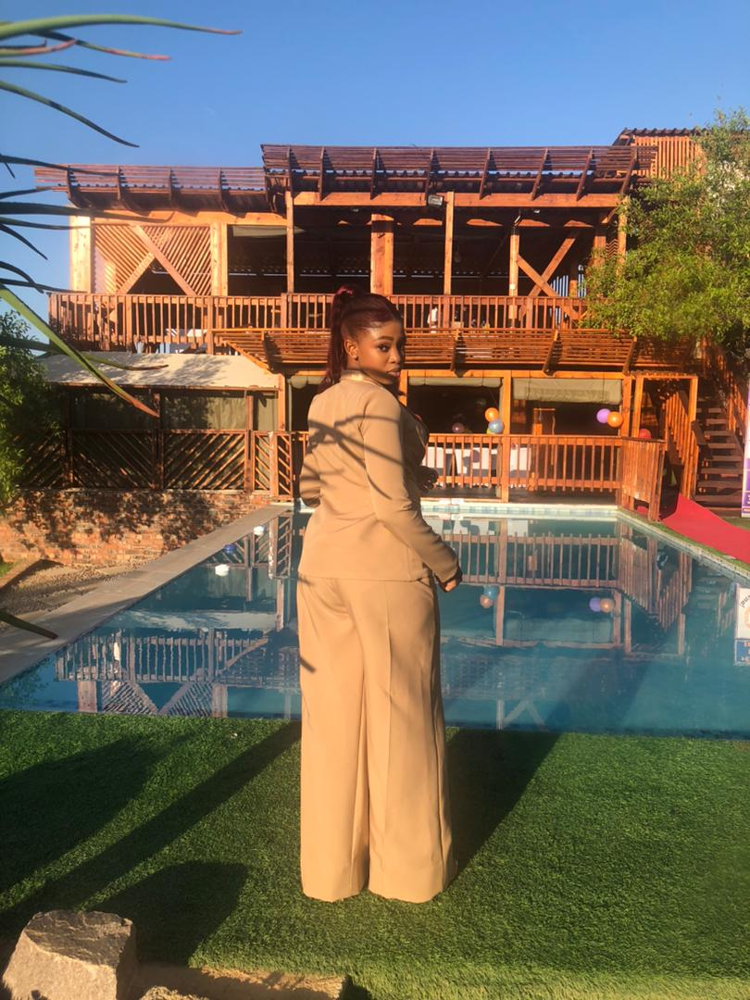

Hi, I'm Katleho Mokwena!
From a young age, I have had a strong interest in paying attention to detail and understanding situations beyond their surface meaning. This curiosity has shaped the way I approach challenges, encouraging me to think critically and work through problems with dedication and persistence. These qualities have naturally guided me toward the field of Business Intelligence and Data Analytics. I am motivated by the opportunity to grow within this field and to contribute to the advancement and empowerment of women in data and technology-related industries.
As an aspiring developer, my goal is to build strong technical and analytical skills that allow me to create solutions driven by data and technology. I aim to deepen my knowledge in programming, data analysis, and business intelligence tools in order to develop systems that help organizations make informed decisions. I also hope to contribute to innovative projects that solve real-world problems through technology. As I continue to grow in this field, I aspire to become a skilled professional who can design efficient, reliable, and impactful digital solutions. Additionally, I am motivated to inspire and support more young women to pursue careers in computing, data analytics, and technology. Ultimately, my goal is to use my knowledge and skills to contribute meaningfully to the advancement of the technology and data industry.
Basic cybersecurity awareness Cloud platforms Entry level programming. Understanding the hardware Basic computer literacy Adaptation Great communication.
- HTML5
- CSS3
- Bootstrap
- Git & GitHub
When I'm Not Coding
In my free time, I enjoy engaging in hobbies that allow me to relax and stay creative. I enjoy crocheting, which helps me express creativity while developing patience and attention to detail. I also enjoy reading, as it allows me to explore new ideas and broaden my knowledge. Additionally, I enjoy hiking, which helps me stay active while appreciating nature and the outdoors.